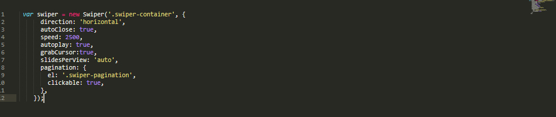
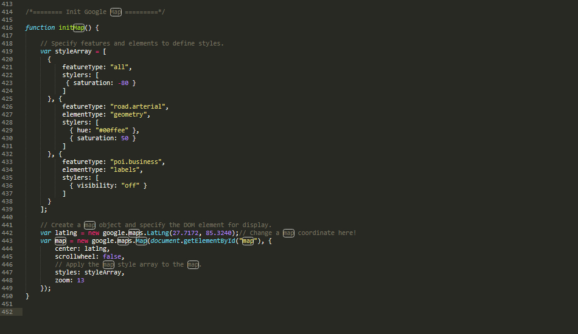

Nepayatri is a responsive, multi-purpose travel booking site template that allows you to easily and effectively create your very own travel booking website to offer hotel, flight, tour bookings. Easy to use & customize, design & code quality, responsive, creative sliders, flexibility, tons of premade pages, multiple blog options responsive and quick support – these are the outstanding features and quality to make us stand out from the crowd.
This template has smooth animation, clean features, modern and unique design which make your website more beautiful. This template was built in HTML5 and CSS3, with parallax image effects and CSS animations to make it even more appealing and dynamic along with blog night and light mode section too.
Whole template is divided in to several folders and their content defines by the folder names easily.
Nepayatri is based on Bootstrap Grid that can help you rapidly develop sites that look beautiful at any size, be it a laptop screen or mobile devices.
The syntax is simple and it's effective cross browser, but the awesome part is that it also has the flexibility to go mobile like a champ. You can really easily customize all part of site or build new.


You don't need any special markup. Please follow like as below image.
For more informations, please visit https://swiperjs.com/demos/
Note: we have used 3 types of slider of swiper which control by its custom code.
You don't need any special markup. Please follow like as below image.

For more informations, please visit http://kenwheeler.github.io/slick/
Note: we have used different looks in different pages which are control by its function on slick slider. So, if you want to change then please visit above slick link.
To get started using the Google Maps click the button below, which guides you through the process of activating the Google Maps JavaScript API and any related services automatically.
Then paste your key to the Google API script at the bottom of HTML file:
<!-- Maps --> <script type="text/javascript" src="http://maps.google.com/maps/api/js?key=YOUR_API_KEY></script>
Map locations are stored in main.js file:
Nepayatri - Tour & Travel Multipurpose Template used fontawesome 4/5, Simple-Line-Icons. fonts for its icons requirement and no images has been used for any icon. A complete list of icons along with the class names can be found here:
To use an icon on any page of the theme use the below code:
All icons class name will always start with the fa-, fab-, fas- . There are several sizes for icons are predefined in the fonts.css inside css folder. i.e. fa-lg, fa-2x, fa-3x, fab-facebook etc
All Images are taken from Pexel. All photos published on Unsplash are licensed under Creative Commons Zero which means you can copy, modify, distribute and use the photos for free, including commercial purposes, without asking permission from or providing attribution to the photographer or Unsplash.
Here we did very clean responsive on mobile and other device where used slicknav for responsive navigation and other did from css with its own device sizes.

Once again, thank you so much for purchasing this template. As I said at the beginning, I'd be glad to help you if you have any questions relating to this template. No guarantees, but I'll do my best to assist.
If you have a more general question relating to the template on ThemeForest, basic HTML/CSS/JavaScript related questions, you might consider visiting the forums and asking your question in the "Item Discussion" section.
Best Regards,
CN-InfoTech